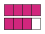

📝 Repaso de la unidad
Actividades de repaso
Escribe tu respuesta y después pulsa «Ver la solución» para corregirla tú. Los puntos dicen el nivel: ● básico, ●●● ampliación.

Solución
a) \(\frac{2}{5}\) b) \(\frac{5}{6}\) c) \(\frac{7}{4}=1\frac{3}{4}\)
¿Cómo te ha ido?
- De las 24 horas del día, dormimos 8.
- 3 de cada 5 alumnos van andando al colegio.
- 45 minutos de una hora.
- 250 g de un paquete de 1 kg de arroz.
Solución
a) \(\frac{8}{24}=\frac{1}{3}\) b) \(\frac{3}{5}\) c) \(\frac{45}{60}=\frac{3}{4}\) d) \(\frac{250}{1\,000}=\frac{1}{4}\)
¿Cómo te ha ido?
\(\dfrac{3}{7},\;\dfrac{9}{5},\;\dfrac{6}{6},\;\dfrac{12}{13},\;\dfrac{15}{4},\;\dfrac{1}{9}\)
Solución
Propias: \(\frac{3}{7}\), \(\frac{12}{13}\), \(\frac{1}{9}\). Impropias: \(\frac{9}{5}\), \(\frac{15}{4}\). Igual a la unidad: \(\frac{6}{6}\).
¿Cómo te ha ido?
- \(\dfrac{13}{4}\)
- \(\dfrac{22}{5}\)
- \(\dfrac{17}{3}\)
- \(\dfrac{31}{6}\)
Solución
a) \(3\frac{1}{4}\) b) \(4\frac{2}{5}\) c) \(5\frac{2}{3}\) d) \(5\frac{1}{6}\)
¿Cómo te ha ido?
- \(2\frac{3}{5}\)
- \(3\frac{3}{4}\)
- \(1\frac{5}{8}\)
- \(4\frac{2}{7}\)
Solución
a) \(\frac{13}{5}\) b) \(\frac{15}{4}\) c) \(\frac{13}{8}\) d) \(\frac{30}{7}\)
¿Cómo te ha ido?
- \(\dfrac{11}{4}\)
- \(\dfrac{7}{8}\)
- \(\dfrac{12}{5}\)
- \(\dfrac{18}{3}\)
Solución
a) \(2{,}75\) b) \(0{,}875\) c) \(2{,}4\) d) \(6\)
¿Cómo te ha ido?
¿Qué fracción de un día son 6 horas? ¿Qué fracción de una hora son 20 minutos? ¿Y qué fracción de un año de 365 días es una semana?
Solución
\(\frac{6}{24}=\frac{1}{4}\); \(\;\frac{20}{60}=\frac{1}{3}\); \(\;\frac{7}{365}\).
¿Cómo te ha ido?
Una tableta de chocolate tiene 4 filas de 6 onzas. Ana se come 2 filas y Luis 5 onzas. ¿Qué fracción de la tableta come cada uno? ¿Qué fracción queda?
Solución
Ana, \(\frac{12}{24}=\frac{1}{2}\); Luis, \(\frac{5}{24}\). Quedan \(\frac{7}{24}\).
¿Cómo te ha ido?
- Tres fracciones propias de denominador 7.
- Tres fracciones impropias de numerador 5.
- Una fracción igual a la unidad de denominador 13.
Solución
Por ejemplo: a) \(\frac{1}{7}\), \(\frac{3}{7}\), \(\frac{6}{7}\) b) \(\frac{5}{4}\), \(\frac{5}{3}\), \(\frac{5}{2}\) c) \(\frac{13}{13}\)
¿Cómo te ha ido?
Un reloj marca las 3 en punto. ¿Qué fracción de vuelta da la aguja de los minutos hasta las 3:40? ¿Qué fracción de vuelta da la aguja de las horas desde las 3 hasta las 7?
Solución
\(\frac{40}{60}=\frac{2}{3}\) de vuelta; \(\;\frac{4}{12}=\frac{1}{3}\) de vuelta.
¿Cómo te ha ido?
¿Para qué números naturales \(a\) la fracción \(\frac{a}{6}\) es propia? ¿Para cuáles es impropia y su número mixto tiene parte entera 2?
Solución
Propia: \(a=1,2,3,4,5\). Parte entera 2: \(a=13,14,15,16,17\) (con \(a=12\) vale exactamente 2).
¿Cómo te ha ido?
Una cuerda se divide en 8 partes iguales y se toman 3. Otra cuerda, el doble de larga, se divide en 4 partes iguales y se toma 1. ¿Qué trozo es más largo? ¿Qué fracción de la primera cuerda mide cada trozo?
Solución
El segundo: mide \(\frac{1}{4}\cdot 2=\frac{2}{4}=\frac{1}{2}\) de la primera cuerda, y el primero \(\frac{3}{8}\).
¿Cómo te ha ido?
- \(\dfrac{24}{36}\)
- \(\dfrac{35}{50}\)
- \(\dfrac{56}{84}\)
- \(\dfrac{120}{200}\)
Solución
a) \(\frac{2}{3}\) b) \(\frac{7}{10}\) c) \(\frac{2}{3}\) d) \(\frac{3}{5}\)
¿Cómo te ha ido?
- \(\dfrac{3}{5}=\dfrac{x}{20}\)
- \(\dfrac{8}{x}=\dfrac{2}{7}\)
- \(\dfrac{x}{12}=\dfrac{15}{36}\)
Solución
a) \(12\) b) \(28\) c) \(5\)
¿Cómo te ha ido?
- \(\dfrac{2}{5}\)
- \(\dfrac{3}{8}\)
- \(\dfrac{10}{12}\)
Solución
Por ejemplo: a) \(\frac{4}{10}\), \(\frac{6}{15}\), \(\frac{8}{20}\) b) \(\frac{6}{16}\), \(\frac{9}{24}\), \(\frac{12}{32}\) c) \(\frac{5}{6}\), \(\frac{20}{24}\), \(\frac{30}{36}\)
¿Cómo te ha ido?
- \(\dfrac{4}{6}\) y \(\dfrac{10}{15}\)
- \(\dfrac{3}{8}\) y \(\dfrac{9}{20}\)
- \(\dfrac{14}{21}\) y \(\dfrac{6}{9}\)
- \(\dfrac{5}{12}\) y \(\dfrac{15}{32}\)
Solución
a) \(60=60\), sí. b) \(60\neq 72\), no. c) \(126=126\), sí. d) \(160\neq 180\), no.
¿Cómo te ha ido?
- \(\dfrac{16}{40}\)
- \(\dfrac{63}{81}\)
- \(\dfrac{75}{125}\)
- \(\dfrac{132}{144}\)
Solución
a) \(\frac{2}{5}\) b) \(\frac{7}{9}\) c) \(\frac{3}{5}\) d) \(\frac{11}{12}\)
¿Cómo te ha ido?
- \(\dfrac{3}{4}\)
- \(\dfrac{7}{12}\)
- \(\dfrac{2}{5}\)
- \(\dfrac{11}{15}\)
Solución
a) \(\frac{45}{60}\) b) \(\frac{35}{60}\) c) \(\frac{24}{60}\) d) \(\frac{44}{60}\)
¿Cómo te ha ido?
- \(\dfrac{84}{126}\)
- \(\dfrac{165}{220}\)
- \(\dfrac{216}{360}\)
Solución
a) m.c.d. \(=42\), \(\frac{2}{3}\) b) m.c.d. \(=55\), \(\frac{3}{4}\) c) m.c.d. \(=72\), \(\frac{3}{5}\)
¿Cómo te ha ido?
\(\dfrac{9}{16},\;\dfrac{21}{35},\;\dfrac{17}{51},\;\dfrac{25}{36},\;\dfrac{33}{44}\)
Solución
Irreducibles: \(\frac{9}{16}\) y \(\frac{25}{36}\). \(\;\frac{21}{35}=\frac{3}{5}\), \(\;\frac{17}{51}=\frac{1}{3}\), \(\;\frac{33}{44}=\frac{3}{4}\).
¿Cómo te ha ido?
- \(\dfrac{4}{9}=\dfrac{28}{x}\)
- \(\dfrac{x}{15}=\dfrac{12}{45}\)
- \(\dfrac{35}{x}=\dfrac{5}{8}\)
- \(\dfrac{18}{24}=\dfrac{x}{32}\)
Solución
a) \(63\) b) \(4\) c) \(56\) d) \(24\)
¿Cómo te ha ido?
Lucía simplifica \(\dfrac{16}{64}\) tachando los dos 6 y obtiene \(\dfrac{1}{4}\). ¿Es correcto el resultado? ¿Y el método? Aplica el mismo «truco» a \(\dfrac{12}{24}\) y compara con la simplificación correcta.
Solución
El resultado es correcto por casualidad, pero el método no: hay que dividir entre un divisor común. \(\frac{12}{24}=\frac{1}{2}\) y el truco daría \(\frac{1}{4}\).
¿Cómo te ha ido?
Escribe una fracción equivalente a \(\dfrac{3}{7}\) cuyo numerador y denominador sumen 50.
Solución
\(\frac{15}{35}\)
¿Cómo te ha ido?
Escribe una fracción equivalente a \(\dfrac{5}{8}\) en la que el denominador sea 21 unidades mayor que el numerador.
Solución
\(\frac{35}{56}\)
¿Cómo te ha ido?
Si \(\dfrac{a}{b}\) es irreducible, ¿también lo es \(\dfrac{a}{a+b}\)? Compruébalo con \(\frac{3}{4}\), \(\frac{5}{7}\) y \(\frac{2}{9}\) y explica por qué.
Solución
Sí: \(\frac{3}{7}\), \(\frac{5}{12}\) y \(\frac{2}{11}\) son irreducibles. Un divisor común de \(a\) y de \(a+b\) también dividiría a \(b\).
¿Cómo te ha ido?
\(\dfrac{5}{8},\;\dfrac{1}{2},\;\dfrac{3}{4},\;\dfrac{7}{12}\)
Solución
\(\frac{1}{2}<\frac{7}{12}<\frac{5}{8}<\frac{3}{4}\)
¿Cómo te ha ido?
\(\dfrac{5}{6}\), \(\dfrac{7}{9}\), \(\dfrac{3}{4}\)
Solución
\(\frac{3}{4} < \frac{7}{9} < \frac{5}{6}\)
¿Cómo te ha ido?
Suma 1 al numerador y al denominador de \(\frac{3}{5}\). ¿La fracción aumenta o disminuye? Haz lo mismo con \(\frac{7}{4}\). ¿Qué observas? Prueba con otras fracciones y enuncia una regla.
Solución
\(\frac{3}{5}\) aumenta y \(\frac{7}{4}\) disminuye: se acercan a 1.
¿Cómo te ha ido?
Halla la fracción que está exactamente en el punto medio entre \(\frac{2}{5}\) y \(\frac{3}{7}\). ¿Se puede repetir el proceso todas las veces que se quiera?
Solución
\(\frac{29}{70}\). Sí.
¿Cómo te ha ido?
- \(\dfrac{3}{7}\;\square\;\dfrac{5}{7}\)
- \(\dfrac{4}{9}\;\square\;\dfrac{4}{11}\)
- \(\dfrac{5}{6}\;\square\;\dfrac{7}{9}\)
- \(-\dfrac{2}{3}\;\square\;-\dfrac{3}{4}\)
Solución
a) \(<\) b) \(>\) c) \(>\) d) \(>\)
¿Cómo te ha ido?
\(\dfrac{2}{5},\;\dfrac{3}{10},\;\dfrac{1}{2},\;\dfrac{7}{20}\)
Solución
\(\frac{1}{2}>\frac{2}{5}>\frac{7}{20}>\frac{3}{10}\)
¿Cómo te ha ido?
\(\dfrac{1}{4},\;\dfrac{3}{2},\;-\dfrac{1}{2},\;\dfrac{5}{4},\;-\dfrac{5}{4}\)
Solución
Dividiendo cada unidad en 4 partes: \(-\frac{5}{4}<-\frac{1}{2}<\frac{1}{4}<\frac{5}{4}<\frac{3}{2}\).
¿Cómo te ha ido?
\(-\dfrac{2}{3},\;\dfrac{1}{6},\;-\dfrac{5}{8},\;\dfrac{3}{4},\;-\dfrac{1}{2}\)
Solución
\(-\frac{2}{3}<-\frac{5}{8}<-\frac{1}{2}<\frac{1}{6}<\frac{3}{4}\)
¿Cómo te ha ido?
- \(\dfrac{1}{3}\) y \(\dfrac{1}{2}\)
- \(\dfrac{3}{5}\) y \(\dfrac{4}{5}\)
- \(\dfrac{7}{10}\) y \(\dfrac{3}{4}\)
Solución
Por ejemplo: a) \(\frac{5}{12}\) b) \(\frac{7}{10}\) c) \(\frac{29}{40}\)
¿Cómo te ha ido?
- \(\dfrac{6}{11}\) y \(\dfrac{3}{5}\)
- \(\dfrac{4}{7}\) y \(\dfrac{8}{13}\)
- \(\dfrac{10}{21}\) y \(\dfrac{5}{9}\)
Solución
Con el mismo numerador es mayor la de menor denominador. a) \(\frac{6}{11}<\frac{6}{10}\) b) \(\frac{8}{14}<\frac{8}{13}\) c) \(\frac{10}{21}<\frac{10}{18}\)
¿Cómo te ha ido?
Tres amigos hacen la misma ruta. Eva ha recorrido \(\frac{5}{8}\) del camino, Iker \(\frac{2}{3}\) y Nerea \(\frac{7}{12}\). ¿En qué orden van?
Solución
\(\frac{14}{24}<\frac{15}{24}<\frac{16}{24}\): va primero Iker, después Eva y por último Nerea.
¿Cómo te ha ido?
En un entrenamiento de baloncesto, Marcos encesta 13 de 20 tiros y Alba 16 de 25. ¿Quién tiene mejor porcentaje de acierto?
Solución
Marcos: \(\frac{13}{20}=\frac{65}{100}\); Alba: \(\frac{16}{25}=\frac{64}{100}\). Marcos, por muy poco.
¿Cómo te ha ido?
¿Qué es mayor, \(\frac{99}{100}\) o \(\frac{100}{101}\)? ¿Y \(\frac{2\,024}{2\,025}\) o \(\frac{2\,025}{2\,026}\)? Explica tu razonamiento sin reducir a común denominador.
Solución
A \(\frac{99}{100}\) le falta \(\frac{1}{100}\) para la unidad y a \(\frac{100}{101}\) solo \(\frac{1}{101}\): es mayor \(\frac{100}{101}\). Del mismo modo, es mayor \(\frac{2\,025}{2\,026}\).
¿Cómo te ha ido?
- \(\dfrac{3}{4}+\dfrac{5}{6}-\dfrac{2}{3}\)
- \(\dfrac{7}{10}-\dfrac{2}{5}+\dfrac{1}{2}\)
- \(2-\dfrac{3}{8}-\dfrac{5}{4}\)
- \(\dfrac{1}{6}+\dfrac{4}{9}-\dfrac{1}{3}\)
Solución
a) \(\frac{11}{12}\) b) \(\frac{4}{5}\) c) \(\frac{3}{8}\) d) \(\frac{5}{18}\)
¿Cómo te ha ido?
- \(\dfrac{6}{7}\cdot\dfrac{21}{10}\)
- \(\dfrac{9}{4}:\dfrac{3}{8}\)
- \(\left(-\dfrac{3}{7}\right)\cdot\dfrac{14}{9}\)
- \(\dfrac{5}{8}:(-10)\)
Solución
a) \(\frac{9}{5}\) b) \(6\) c) \(-\frac{2}{3}\) d) \(-\frac{1}{16}\)
¿Cómo te ha ido?
- \(\dfrac{3}{4} - \dfrac{2}{3} + \dfrac{1}{6}\)
- \(\dfrac{7}{10} \cdot \dfrac{5}{14}\)
- \(\left(-\dfrac{4}{9}\right) : \dfrac{8}{3}\)
- \(2 - \dfrac{3}{5} \cdot \dfrac{5}{6}\)
Solución
a) \(\frac{1}{4}\) b) \(\frac{1}{4}\) c) \(-\frac{1}{6}\) d) \(\frac{3}{2}\)
¿Cómo te ha ido?
- \(\dfrac{2}{3}\cdot\dfrac{9}{4}-\dfrac{1}{2}\)
- \(\left(\dfrac{3}{4}+\dfrac{1}{2}\right)\cdot\dfrac{8}{5}\)
- \(\dfrac{3}{4}-\dfrac{1}{2}:\dfrac{4}{3}\)
- \(\left(1-\dfrac{2}{5}\right):\left(\dfrac{1}{2}+\dfrac{1}{10}\right)\)
Solución
a) \(1\) b) \(2\) c) \(\frac{3}{8}\) d) \(1\)
¿Cómo te ha ido?
- \(\left(\dfrac{1}{2} - \dfrac{1}{3}\right) \cdot \left(\dfrac{3}{4} + \dfrac{1}{4}\right)\)
- \(\dfrac{2}{3} : \left(1 - \dfrac{1}{3}\right) - \dfrac{1}{2}\)
- \(\left[\dfrac{3}{5} + \dfrac{2}{5} \cdot \left(-\dfrac{1}{2}\right)\right] : \dfrac{4}{5}\)
- \(1 - \left(\dfrac{1}{2}\right)^2 + \dfrac{1}{4}\)
Solución
a) \(\frac{1}{6}\) b) \(\frac{1}{2}\) c) \(\frac{1}{2}\) d) \(1\)
¿Cómo te ha ido?
Mario ha calculado \(1-\dfrac{2}{3}\cdot\dfrac{3}{4}=\dfrac{1}{3}\cdot\dfrac{3}{4}=\dfrac{1}{4}\). Explica el error y calcula el resultado correcto.
Solución
\(\frac{1}{2}\)
¿Cómo te ha ido?
Usa la tecla de fracciones de la calculadora para comprobar tus resultados.
- \(\dfrac{3}{4}-\dfrac{5}{6}+\dfrac{1}{3}\)
- \(\left(\dfrac{2}{5}+\dfrac{1}{2}\right):\dfrac{3}{10}\)
- Escribe \(\frac{7}{12}\) en forma decimal e indica de qué tipo es.
Solución
- \(\frac{1}{4}\)
- \(3\)
- \(0{,}58\overline{3}\), periódico mixto.
¿Cómo te ha ido?
Lee el texto y contesta.
En el antiguo Egipto, cada parte del ojo del dios Horus representaba una fracción: \(\frac{1}{2}\), \(\frac{1}{4}\), \(\frac{1}{8}\), \(\frac{1}{16}\), \(\frac{1}{32}\) y \(\frac{1}{64}\). Los escribas las usaban para medir el grano. La leyenda dice que, al sumarlas, faltaba un trocito para completar el ojo, y que el dios Thot lo añadía con su magia. Los egipcios escribían casi todas las fracciones como sumas de fracciones de numerador 1, por ejemplo \(\frac{3}{4} = \frac{1}{2} + \frac{1}{4}\).
- Suma las seis fracciones del ojo de Horus.
- ¿Qué fracción añadía Thot? Exprésala también como decimal.
- Escribe \(\frac{5}{6}\) y \(\frac{7}{12}\) como suma de dos fracciones distintas de numerador 1.
Solución
a) \(\frac{63}{64}\) b) \(\frac{1}{64} = 0{,}015625\) c) \(\frac{1}{2} + \frac{1}{3}\); \(\frac{1}{3} + \frac{1}{4}\).
¿Cómo te ha ido?
Escribe los números del 1 al 15 en la columna A. En B1 escribe =1/2^A1 y en C1 =SUMA($B$1:B1); arrastra ambas fórmulas.
- ¿Qué fracciones aparecen en la columna B?
- ¿A qué número se acercan las sumas de la columna C? ¿Lo llegan a superar?
- ¿Cuánto vale la suma de los 10 primeros términos en forma de fracción?
Solución
a) \(\frac{1}{2}, \frac{1}{4}, \frac{1}{8}, \ldots\) b) Se acercan a 1. c) \(\frac{1\,023}{1\,024}\).
¿Cómo te ha ido?
- \(\left(\dfrac{1}{2}-\dfrac{1}{3}\right)\cdot\left(\dfrac{3}{4}+\dfrac{1}{4}\right):\dfrac{1}{6}\)
- \(\dfrac{2}{3}-\left(\dfrac{1}{2}-\dfrac{3}{4}\cdot\dfrac{2}{9}\right)\)
Solución
a) \(1\) b) \(\frac{1}{3}\)
¿Cómo te ha ido?
- \(\dfrac{3}{10}+\dfrac{2}{15}\)
- \(\dfrac{7}{8}-\dfrac{5}{12}\)
- \(4+\dfrac{2}{3}-\dfrac{5}{6}\)
- \(-\dfrac{1}{4}+\dfrac{5}{6}\)
Solución
a) \(\frac{13}{30}\) b) \(\frac{11}{24}\) c) \(\frac{23}{6}\) d) \(\frac{7}{12}\)
¿Cómo te ha ido?
- \(\dfrac{5}{6}\cdot\dfrac{3}{10}\)
- \(\dfrac{8}{15}\cdot\left(-\dfrac{5}{12}\right)\)
- \(\dfrac{7}{9}:\dfrac{14}{3}\)
- \(6:\dfrac{3}{4}\)
Solución
a) \(\frac{1}{4}\) b) \(-\frac{2}{9}\) c) \(\frac{1}{6}\) d) \(8\)
¿Cómo te ha ido?
- \(\dfrac{3}{8}\)
- \(-\dfrac{5}{2}\)
- \(7\)
- \(\dfrac{1}{4}\)
Solución
a) \(\frac{8}{3}\) b) \(-\frac{2}{5}\) c) \(\frac{1}{7}\) d) \(4\)
¿Cómo te ha ido?
- \(\dfrac{3}{4}-\dfrac{1}{2}\cdot\dfrac{1}{3}\)
- \(\left(\dfrac{2}{5}+\dfrac{1}{3}\right):\dfrac{11}{5}\)
- \(\dfrac{1}{2}\cdot\dfrac{4}{5}+\dfrac{3}{10}:\dfrac{3}{2}\)
- \(2-\left(\dfrac{1}{3}+\dfrac{1}{4}\right)\cdot\dfrac{12}{7}\)
Solución
a) \(\frac{7}{12}\) b) \(\frac{1}{3}\) c) \(\frac{3}{5}\) d) \(1\)
¿Cómo te ha ido?
- \(\dfrac{5}{6}-\dfrac{2}{3}\cdot\left(\dfrac{1}{2}-\dfrac{1}{4}\right)\)
- \(\left(1-\dfrac{3}{8}\right):\left(\dfrac{5}{4}-\dfrac{1}{2}\right)\)
- \(-\dfrac{3}{5}+\dfrac{4}{5}:(-2)\)
- \(\dfrac{3}{2}\cdot\left(\dfrac{2}{3}-\dfrac{1}{6}\right)-\dfrac{1}{4}\)
Solución
a) \(\frac{2}{3}\) b) \(\frac{5}{6}\) c) \(-1\) d) \(\frac{1}{2}\)
¿Cómo te ha ido?
- \(\left[1-\left(\dfrac{1}{2}-\dfrac{1}{5}\right)\right]\cdot\dfrac{10}{7}\)
- \(\dfrac{3}{4}:\left[\dfrac{1}{2}+\left(\dfrac{1}{3}-\dfrac{1}{6}\right)\right]\)
Solución
a) \(1\) b) \(\frac{9}{8}\)
¿Cómo te ha ido?
- \(\dfrac{2}{3}+\square=\dfrac{5}{6}\)
- \(\square-\dfrac{1}{4}=\dfrac{3}{8}\)
- \(\dfrac{3}{5}\cdot\square=\dfrac{9}{20}\)
- \(\square:\dfrac{2}{7}=\dfrac{7}{4}\)
Solución
a) \(\frac{1}{6}\) b) \(\frac{5}{8}\) c) \(\frac{3}{4}\) d) \(\frac{1}{2}\)
¿Cómo te ha ido?
Sara ha calculado \(\dfrac{3}{4}:2=\dfrac{6}{4}=\dfrac{3}{2}\). Explica el error y calcula el resultado correcto.
Solución
Ha multiplicado en lugar de dividir: \(\frac{3}{4}:\frac{2}{1}=\frac{3}{8}\).
¿Cómo te ha ido?
- \(\left(\dfrac{1}{2}-\dfrac{1}{3}\right):\left(\dfrac{1}{2}+\dfrac{1}{3}\right)\)
- \(\left[\dfrac{2}{3}-\left(\dfrac{1}{4}+\dfrac{1}{6}\right)\right]:\left[1-\dfrac{3}{4}\cdot\left(\dfrac{2}{3}+\dfrac{2}{9}\right)\right]\)
Solución
a) \(\frac{1}{5}\) b) \(\frac{1}{4}:\frac{1}{3}=\frac{3}{4}\)
¿Cómo te ha ido?
Sin hacer cuentas, ¿qué es mayor, \(15\cdot\frac{3}{4}\) o \(15:\frac{3}{4}\)? ¿Por qué? Después compruébalo.
Solución
\(15:\frac{3}{4}\): multiplicar por una fracción menor que 1 hace el número más pequeño y dividir entre ella, más grande. \(\;15\cdot\frac{3}{4}=\frac{45}{4}=11{,}25\) y \(15:\frac{3}{4}=20\).
¿Cómo te ha ido?
- \(\frac{3}{8}\) de 640
- \(\frac{5}{12}\) de 180
- \(\frac{7}{9}\) de 81
Solución
a) 240 b) 75 c) 63
¿Cómo te ha ido?
En 2º ESO B hay 28 alumnos y \(\frac{3}{7}\) de ellos juegan al fútbol. ¿Cuántos alumnos juegan al fútbol? ¿Cuántos no?
Solución
12 juegan y 16 no.
¿Cómo te ha ido?
- \(\frac{2}{3}\) de 90
- \(\frac{3}{5}\) de 250
- \(\frac{5}{8}\) de 72
- \(\frac{4}{7}\) de 140
Solución
a) 60 b) 150 c) 45 d) 80
¿Cómo te ha ido?
Un depósito de gasóleo de 800 L está lleno en sus \(\frac{3}{4}\) partes. ¿Cuántos litros tiene? ¿Cuántos faltan para llenarlo?
Solución
Tiene 600 L y faltan 200 L.
¿Cómo te ha ido?
Para hacer un bizcocho se necesitan \(\frac{3}{4}\) de kilo de harina. ¿Cuántos bizcochos se pueden hacer con un saco de 6 kilos?
Solución
8 bizcochos.
¿Cómo te ha ido?
Un ciclista ha recorrido \(\frac{2}{9}\) de una etapa por la mañana y \(\frac{1}{3}\) por la tarde. Si le faltan 60 km, ¿cuántos kilómetros tiene la etapa?
Solución
135 km.
¿Cómo te ha ido?
Un depósito tiene 240 L de agua. El lunes se gastan \(\frac{3}{8}\) del agua y el martes \(\frac{2}{5}\) de lo que quedaba. ¿Cuántos litros quedan?
Solución
Lunes: 90 L, quedan 150 L. Martes: 60 L. Quedan 90 L.
¿Cómo te ha ido?
Una receta para 6 personas lleva \(\frac{3}{4}\) kg de harina. ¿Cuánta harina hace falta para 10 personas? Si la harina se vende en paquetes de medio kilo, ¿cuántos paquetes hay que comprar?
Solución
\(1{,}25\) kg; 3 paquetes.
¿Cómo te ha ido?
En una finca, \(\frac{2}{5}\) se dedican a trigo, \(\frac{1}{3}\) a maíz y los 1 200 m\(^2\) restantes a huerta. ¿Qué superficie tiene la finca? ¿Cuántos m\(^2\) hay de trigo y de maíz?
Solución
Finca: 4 500 m\(^2\). Trigo: 1 800 m\(^2\); maíz: 1 500 m\(^2\).
¿Cómo te ha ido?
Una familia recorre el primer día \(\frac{1}{3}\) de un viaje y el segundo día \(\frac{2}{5}\) de lo que le quedaba. Aún le faltan 240 km. ¿Cuántos kilómetros tiene el viaje?
Solución
600 km
¿Cómo te ha ido?
De una tableta de chocolate de 150 g se usan \(\frac{3}{4}\) para una tarta y \(\frac{1}{5}\) de lo que queda para decorarla. ¿Cuántos gramos sobran?
Solución
Sobran 30 g.
¿Cómo te ha ido?
Los \(\frac{2}{5}\) de un número son 36. ¿Cuál es el número?
Solución
\(\frac{1}{5}\) son \(36:2=18\); el número es \(18\cdot 5=90\).
¿Cómo te ha ido?
En el puerto de Santoña un barco descarga 1 200 kg de bocarte. Los \(\frac{2}{5}\) se destinan a anchoa en conserva, \(\frac{1}{4}\) a boquerón en vinagre y el resto se vende fresco. ¿Qué fracción se vende fresca? ¿Cuántos kilos son?
Solución
\(1-\frac{13}{20}=\frac{7}{20}\), que son 420 kg.
¿Cómo te ha ido?
Una botella contiene \(\frac{3}{4}\) L de zumo. ¿Cuántos vasos de \(\frac{1}{8}\) L se pueden llenar? Si se sirven 4 vasos, ¿qué fracción de litro queda en la botella?
Solución
\(\frac{3}{4}:\frac{1}{8}=6\) vasos. Quedan \(\frac{3}{4}-\frac{4}{8}=\frac{1}{4}\) L.
¿Cómo te ha ido?
Pedro gasta \(\frac{1}{4}\) de su paga en el cine y \(\frac{2}{3}\) de lo que le queda en un libro. Si le sobran 5 €, ¿cuánto dinero tenía?
Solución
20 €.
¿Cómo te ha ido?
Un grifo llena un depósito en 3 horas y otro en 6 horas. ¿Qué fracción del depósito llena cada grifo en una hora? ¿Cuánto tardan en llenarlo si se abren los dos a la vez?
Solución
\(\frac{1}{3}\) y \(\frac{1}{6}\). Juntos, 2 horas.
¿Cómo te ha ido?
Un grifo llena un depósito en 4 horas y un desagüe lo vacía en 12 horas. Si el depósito está vacío y se abren los dos a la vez, ¿cuánto tarda en llenarse?
Solución
6 horas
¿Cómo te ha ido?
Lee el texto y contesta.
Laura ha empezado a trabajar y cobra 1 440 € netos al mes. Ha decidido organizarse: dedicará \(\frac{3}{8}\) del sueldo al alquiler, \(\frac{1}{6}\) a la comida y el \(0{,}15\) a transporte y ocio. Lo que quede lo ahorrará para comprarse un coche de segunda mano que cuesta 8 000 €.
- ¿Cuánto dedica cada mes al alquiler, a la comida y a transporte y ocio?
- ¿Cuánto ahorra al mes? ¿Qué fracción del sueldo es?
- ¿Cuántos meses tardará en poder comprarse el coche?
Solución
a) Alquiler, 540 €; comida, 240 €; transporte y ocio, 216 €. b) 444 €, \(\frac{37}{120}\) del sueldo. c) 19 meses.
¿Cómo te ha ido?
Un grupo de excursión gasta \(\frac{1}{3}\) del dinero en el autobús, \(\frac{1}{4}\) en las entradas y \(\frac{3}{5}\) de lo que le queda en la comida. Si le sobran 70 €, ¿cuánto dinero tenía?
Solución
Quedan \(\frac{5}{12}\); comida \(\frac{3}{5}\cdot\frac{5}{12}=\frac{1}{4}\). Sobra \(\frac{5}{12}-\frac{3}{12}=\frac{1}{6}\), que son 70 €. Tenía 420 €.
¿Cómo te ha ido?
Una pelota se deja caer desde 32 m de altura y en cada bote sube \(\frac{3}{4}\) de la altura desde la que ha caído. ¿Qué altura alcanza después del tercer bote?
Solución
\(32\cdot\frac{3}{4}\cdot\frac{3}{4}\cdot\frac{3}{4}=13{,}5\) m (24 m, 18 m y 13,5 m).
¿Cómo te ha ido?
- \(\dfrac{9}{20}\)
- \(\dfrac{1}{3}\)
- \(\dfrac{13}{6}\)
- \(\dfrac{8}{11}\)
Solución
- \(0{,}45\) exacto
- \(0{,}\overline{3}\) periódico puro
- \(2{,}1\overline{6}\) periódico mixto
- \(0{,}\overline{72}\) periódico puro
¿Cómo te ha ido?
- \(\dfrac{7}{20}\)
- \(\dfrac{2}{3}\)
- \(\dfrac{5}{12}\)
- \(\dfrac{13}{25}\)
Solución
a) \(0{,}35\), exacto. b) \(0{,}\overline{6}\), periódico puro. c) \(0{,}41\overline{6}\), periódico mixto. d) \(0{,}52\), exacto.
¿Cómo te ha ido?
- \(\dfrac{11}{8}\)
- \(\dfrac{4}{9}\)
- \(\dfrac{7}{15}\)
- \(\dfrac{23}{99}\)
Solución
a) \(1{,}375\), exacto. b) \(0{,}\overline{4}\), periódico puro. c) \(0{,}4\overline{6}\), periódico mixto. d) \(0{,}\overline{23}\), periódico puro.
¿Cómo te ha ido?
- \(0{,}7777\ldots\)
- \(2{,}454545\ldots\)
- \(1{,}23333\ldots\)
- \(0{,}1252525\ldots\)
Solución
a) \(0{,}\overline{7}\) b) \(2{,}\overline{45}\) c) \(1{,}2\overline{3}\) d) \(0{,}1\overline{25}\)
¿Cómo te ha ido?
\(0{,}\overline{3},\;0{,}33,\;0{,}3,\;0{,}34,\;0{,}3\overline{4}\)
Solución
\(0{,}3<0{,}33<0{,}\overline{3}<0{,}34<0{,}3\overline{4}\)
¿Cómo te ha ido?
Calcula la expresión decimal de \(\frac{1}{2}\), \(\frac{1}{4}\), \(\frac{1}{5}\), \(\frac{1}{8}\), \(\frac{1}{10}\), \(\frac{1}{3}\), \(\frac{1}{6}\) y \(\frac{1}{9}\). Descompón cada denominador en factores primos. ¿Qué tienen en común los denominadores de las que dan un decimal exacto?
Solución
Son exactas \(\frac{1}{2}\), \(\frac{1}{4}\), \(\frac{1}{5}\), \(\frac{1}{8}\) y \(\frac{1}{10}\): sus denominadores solo tienen los factores 2 y 5. Las de denominador con factor 3 son periódicas.
¿Cómo te ha ido?
- \(4{,}237\)
- \(0{,}685\)
- \(12{,}999\)
- \(7{,}3049\)
Solución
- Red. \(4{,}24\); trunc. \(4{,}23\)
- Red. \(0{,}69\); trunc. \(0{,}68\)
- Red. \(13{,}00\); trunc. \(12{,}99\)
- Red. \(7{,}30\); trunc. \(7{,}30\)
¿Cómo te ha ido?
- \(5{,}647\)
- \(0{,}0952\)
- \(19{,}96\)
Solución
a) \(6\); \(5{,}6\); \(5{,}65\) b) \(0\); \(0{,}1\); \(0{,}10\) c) \(20\); \(20{,}0\); \(19{,}96\)
¿Cómo te ha ido?
- \(0{,}\overline{3}\)
- \(2{,}\overline{18}\)
- \(1{,}1\overline{6}\)
- \(0{,}\overline{142857}\)
Solución
a) \(0{,}333\) b) \(2{,}182\) c) \(1{,}167\) d) \(0{,}143\)
¿Cómo te ha ido?
- \(0{,}56\)
- \(1{,}\overline{6}\)
- \(0{,}\overline{45}\)
- \(2{,}1\overline{3}\)
- \(0{,}08\overline{3}\)
- \(3{,}25\)
Solución
a) \(\frac{14}{25}\) b) \(\frac{5}{3}\) c) \(\frac{5}{11}\) d) \(\frac{32}{15}\) e) \(\frac{1}{12}\) f) \(\frac{13}{4}\)
¿Cómo te ha ido?
- \(0{,}45\)
- \(1{,}\overline{3}\)
- \(0{,}2\overline{7}\)
- \(2{,}\overline{15}\)
Solución
a) \(\frac{9}{20}\) b) \(\frac{4}{3}\) c) \(\frac{5}{18}\) d) \(\frac{71}{33}\)
¿Cómo te ha ido?
- \(0{,}8\)
- \(1{,}35\)
- \(0{,}004\)
- \(2{,}125\)
Solución
a) \(\frac{4}{5}\) b) \(\frac{27}{20}\) c) \(\frac{1}{250}\) d) \(\frac{17}{8}\)
¿Cómo te ha ido?
- \(0{,}\overline{6}\)
- \(2{,}\overline{36}\)
- \(0{,}1\overline{6}\)
- \(1{,}0\overline{5}\)
Solución
a) \(\frac{2}{3}\) b) \(\frac{234}{99}=\frac{26}{11}\) c) \(\frac{15}{90}=\frac{1}{6}\) d) \(\frac{95}{90}=\frac{19}{18}\)
¿Cómo te ha ido?
- \(0{,}5+0{,}\overline{3}\)
- \(0{,}\overline{6}\cdot 0{,}75\)
- \(1{,}\overline{2}:0{,}\overline{2}\)
Solución
a) \(\frac{1}{2}+\frac{1}{3}=\frac{5}{6}\) b) \(\frac{2}{3}\cdot\frac{3}{4}=\frac{1}{2}\) c) \(\frac{11}{9}:\frac{2}{9}=\frac{11}{2}\)
¿Cómo te ha ido?
- Calcula con la calculadora \(\frac{1}{7}\) y \(\frac{2}{7}\). ¿Cuántas cifras tiene el periodo?
- ¿Qué observas en las cifras de los dos periodos?
- Sin calculadora, intenta adivinar \(\frac{3}{7}\) y compruébalo.
Solución
a) \(0{,}\overline{142857}\) y \(0{,}\overline{285714}\): 6 cifras. b) Las mismas cifras, empezando en otro sitio. c) \(0{,}\overline{428571}\).
¿Cómo te ha ido?
Marca V (verdadero) o F (falso). Después justifica tu respuesta.
No se corrige solo: compruébalo con tu profesor o profesora.
Solución
- Verdadero.
- Verdadero.
- Verdadero.
- Falso.
¿Cómo te ha ido?
En el supermercado compras 3 botellas de aceite a 8,95 € cada una y 2 paquetes de café a 4,10 €. Estima mentalmente si tienes bastante con 35 € y después calcula el importe exacto.
Solución
No llega: cuesta 35,05 €.
¿Cómo te ha ido?
Ocho amigos piden una pizza de 12,60 € y la pagan a partes iguales. ¿Cuánto debería pagar cada uno? Si cada uno paga la cantidad redondeada a los céntimos, ¿sobra o falta dinero? ¿Cuánto?
Solución
\(12{,}60:8=1{,}575\) €. Pagan 1,58 € cada uno: \(8\cdot 1{,}58=12{,}64\) €; sobran 4 céntimos.
¿Cómo te ha ido?
De un rollo de 25 m de cable se cortan trozos de \(1{,}85\) m. Estima cuántos trozos salen y después calcula cuántos salen exactamente y cuánto cable sobra.
Solución
Estimación: unos \(25:2\approx 12\), algo más porque cada trozo mide menos de 2 m. Exacto: 13 trozos (\(13\cdot 1{,}85=24{,}05\) m) y sobran \(0{,}95\) m.
¿Cómo te ha ido?
Por \(1{,}250\) kg de carne se pagan \(11{,}25\) €. ¿Cuánto cuesta el kilo? ¿Cuánto costarán \(2{,}4\) kg?
Solución
\(11{,}25 : 1{,}25 = 9\) € el kilo. \(2{,}4 \cdot 9 = 21{,}60\) €.
¿Cómo te ha ido?
Un depósito lleno en sus \(0{,}75\) partes contiene 1 800 litros. Se gastan \(\frac{2}{3}\) de esa agua.
- ¿Cuál es la capacidad del depósito?
- ¿Cuántos litros quedan? ¿Qué fracción del depósito es?
Solución
a) 2 400 litros. b) 600 litros, \(\frac{1}{4}\) del depósito.
¿Cómo te ha ido?
- Calcula la fracción generatriz de \(0{,}\overline{9}\). ¿Qué número es?
- Comprueba el resultado de otra forma: escribe \(\frac{1}{3}\) como decimal y multiplícalo por 3.
Solución
a) \(\frac{9}{9} = 1\) b) \(3 \cdot 0{,}\overline{3} = 0{,}\overline{9} = 1\)
¿Cómo te ha ido?
🧩 Paso a paso
Así se resuelven los ejercicios tipo de la unidad. Cada bloque es una orden, como en Scratch: los bloques se leen de arriba abajo y los que tienen forma de C se repiten o solo se hacen si se cumple la condición.